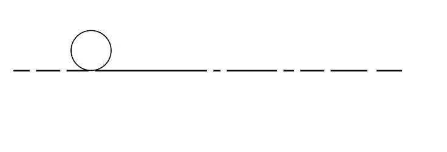
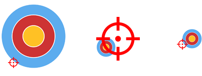
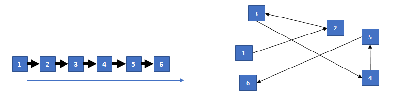
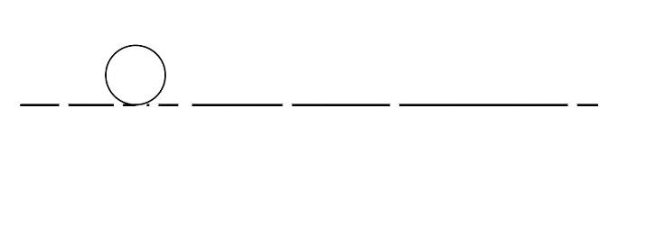
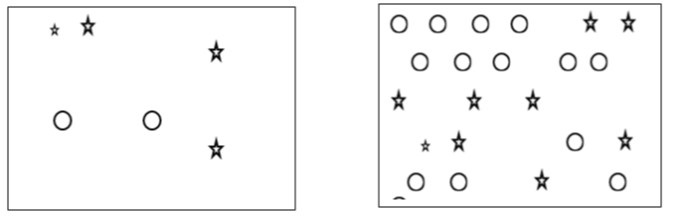

This study aims to assess the game characteristics that make a game more sensitive to delay in Cloud Gaming. Cloud Gaming means games are running in a cloud server, and the video of the game is streaming to the clients via a network. Additionally, the user’s inputs such as mouse and keyboards are sent back to the cloud server, so unlike the online gaming where part of the game was running in your local device here everything is in the server and if there would be any delay all of your actions are delayed.
Delay reduces players performance and it strongly annoys them. But games have different tolerance to delay. In some games having even a little amount of delay is not acceptable while in some games, playing with delay won’t cause serious problem. For example, high delay in a shooting game would lead to missing a shot and giving the opportunity to the enemy to shoot at you, while in a turn-based game like Chess having even a higher level of delay won’t make a problem as you can perform the same action again without losing any score.
We identified some characteristics that influence the delay sensitivity and now we are asking you to rate each of these characteristics in different game scenarios. Below there is a short description of each of these characteristics.
1- Temporal Accuracy
Temporal Accuracy describes the available time interval for a player to perform a desired interaction. The time interval is strongly dependent on the mechanics and pace of a game scenario. In other words, this game characteristic describes the available reaction time of a player.
In a jump and run game scenario for example, there is a point A, which marks the earliest point a player could perform a successful jump, and a point B, which marks the latest point a player could perform a successful jump. Depending on the distance between these two points and the speed of the character, there is an available time interval to perform the jump successfully. This example is illustrated in Fig. 1A and Fig. 1B. If the time interval is short, we consider the game to require a high temporal accuracy to be played.
The characteristic should be quantified by using the 5-point category scale shown below. Here, an example for a game with an unlimited time interval to perform an interaction is chess. An example for a game with an extremely short available time interval, a shooting game can be considered, as often the player who reacts first (immediate) wins.
How do you judge the available time interval for players to perform the desired interaction in this game scenario?

Figure 1A: Slow pace, you have a long interval to jump Figure 1B: Fast pace, you have a short interval to jump
2- Spatial Accuracy
The spatial accuracy is the degree of precision required to complete an interaction successfully.
Typically, game scenarios in which the player has to select (or point at) on object precisely, or in which precise movements are necessary, require a high spatial accuracy. However, this characteristic often strongly depends on the size of the controlled object (e.g., a character or curser) and the size of objects to interact with (e.g., a target or platform). In a shooting game scenario for example, the position of the cursor controlling a sniper riffle has to be much more precise than compared to a flame thrower, due to their different impact radius. For the latter scenario, a lower spatial accuracy is needed, as the radius is much larger. This example is illustrated in Fig. 2.
The characteristic should be quantified by using the 4-point category scale shown below. Here, an example for a game scenario not requiring any precision is a Flipper game, as here only the timing of the paddle movement is important. Using a sniper weapon in a shooting game scenario, would be an example for a game scenario which requires a high spatial accuracy.
How much spatial accuracy to successfully perform an interaction is required in this game scenario?

Figure 2: Differnt size of objects would lead to different spatial accuracy
3- Predictability
Predictability describes if a player is able to estimate the upcoming events in the game. This can for example relate to positions of objects (spatial) or time points of events (temporal).
In a simple point and click game scenario as illustrated in Fig 3, where a player has to click on the moving squares, the movement path of an object could be linear (see Figure 3A), or random (see Figure 3B). In the linear mode, a player can easily predict where the object will be a second later. In this case, a player can adapt and select the predicted/anticipated position to counter-balance a delay, which is not possible for a random movement.
The characteristic should be quantified by using the 4-point category scale shown below. Here, an example for a game where no events requiring an interaction can be predicted is chess, whereas a game scenario with purely random movements as shown in Fig. 3B would be not predictable.
How much are the events of this game scenario predictable for a player?

Figure 3A: Linear movement of objects Figure 3B: Random movement of objects
The number of possible input directions in a game scenario is known as Degree of Freedom (DoF). DoF consists of translations (back and forward, left and right, up and down) as well as rotations (vertical axis and height) for one or multiple input devices/elements.
The characteristic should be quantified by using the 5-point category scale shown below. An example of a game scenario with DoF of 1, a jumping game where a player must simply jump (up) can be considered. In a jumping game where in addition to jumping a player can also go forward and backward, the DoF is 3. In a shooting game where a player can go in 4 different directions with a keyboard and 4 different directions with a mouse, the DoF is 8.
How many different input directions (DoF) are available in this game scenario?
How strong a delayed interaction influences a user’s experience, often depends on the negative consequences. Such consequences could be the loss of progress, points, and rewards.
The characteristic should be quantified by using the 3-point category scale shown below. In a scenario without negative consequences of an incorrect interaction or in which the game status is only worse but it is still realistic to win (e.g. chess or racing game), the consequences are low. If an incorrect interaction would result in a situation in which the game is difficult to win afterwards, the consequences are medium. Lastly, if an incorrect interaction immediately results in losing the game (e.g. jump and run in which a collision with an object directly lead to losing), the negative consequences are high.
How strong are the negative consequences of an incorrect interaction in this game scenario?

Figure 4: A single misplay would lead to game over
There are games in which every input of the user can significantly change the outcome of the game. In many jump and run game scenarios for example, it is critical that a player performs a jump correctly, otherwise this would results in losing the game. However, in a racing game or strategy game, many inputs do not directly lead to a strong change of the game state, for example when selecting units or looking at a map.
The characteristic should be quantified by using the 3-point category scale shown below. Exploring a game world or looking at a map would be a scenario with a low importance of actions. Selecting units in a strategy game or shooting with a weapon which has a high shooting rate (e.g., a minigun), can be considered as moderately important actions. A jump and run game scenario or shooting at a target with a weapon which has a low shooting rate (e.g., a sniper) would mainly consist of highly important actions.
How much each input of this game scenario can change its outcome?
The number of required actions and with that also the number of inputs a player performs in a certain time frame may influence the perception of a network delay. The characteristic could also be described as the minimum actions per minute (APM) to player the game scenario. It is assumed that a higher number of required action will lead to more user inputs and thus, more situation in which a player can perceive a delay. The number of objects to react to or the pace of the game can influence also the number of required actions.
The characteristic should be quantified by using the 3-point category scale shown below. A game scenario with a low number of required actions would be puzzle games, in which every few seconds an action is performed. A game scenario which requires an interaction every 1-2 seconds should be considered as moderate in terms of number of required actions. Lastly, a scenarios in which more than one interaction is required every second, should be rated as a scenarios with a high number of required actions.
How do you judge the number of required actions in this scenario?

Figure 5: (a) Low number of required actions (b) higher number of required actions
Feedback frequency means how often the game gives visual, auditive, or haptic feedback to the player. A player’s input frequency may influence the degree to which he perceives a possible delay. For example, if player keeps moving a delayed mouse cursor he will always perceive the delayed movement but if he only sometimes presses a key to jump, then the feedback will only be delayed in this moment. Here, the jump of the character is a visual feedback provided by the game.
The characteristic should be quantified by using the 3-point category scale shown below.
How often does the game scenario provide feedback to the player?
Type of the input that a game have give to the game can be different. In some games, players are continuously giving input, for example in a shooting game where players are always moving their mouse. Some games have discrete inputs meaning that players interact using pressing a button, for example a jumping game where players must jump using pressing a key. In games with Quasi-Continuous inputs players interact with the game using holding a key or constantly pressing a key, for example in Tekken where the player is constantly executing the same technique.
The characteristic should be quantified by using the 5-point category scale shown below.
How do you assess the type of user actions in this game ?
Gameplay: A short description of the game. Input: e.g. right-click to shoot, mouse movement for aiming.
Please write down your thoughts when rating this characteristic:
Please write down your thoughts when rating this characteristic:
Please write down your thoughts when rating this characteristic:
Please write down your thoughts when rating this characteristic:
Please write down your thoughts when rating this characteristic:
Please write down your thoughts when rating this characteristic:
Please write down your thoughts when rating this characteristic:
Please write down your thoughts when rating this characteristic:
Please write down your thoughts when rating this characteristic:
Please write down your thoughts when rating this characteristic: